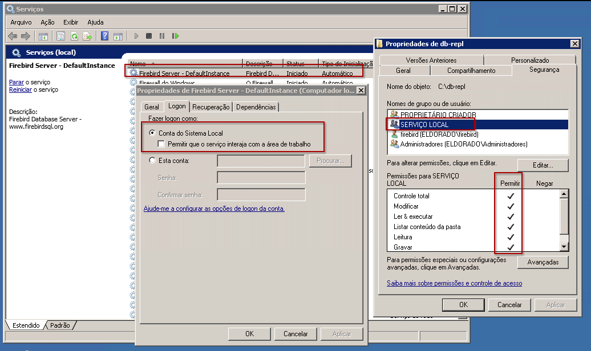

Definindo nosso Ambiente
Para este guia, vamos assumir o seguinte cenário de "campo de batalha":
- Servidor Publicador: Um Windows Server com Firebird 5 instalado em
c:\fb5. O diretório dos bancos de dados éc:\db. O proprietário desta pasta é o usuárioLocalSystem, o mesmo processo que gerencia o serviço do Firebird no Windows. - Servidor Leitor: Um Linux (Debian/Ubuntu) pronto para receber os dados em
/var/db. - Os Bancos de Dados:
acme.fdb: Nosso banco principal de vendas e bigornas.correios.fdb: Nosso banco auxiliar com CEPs e endereços.
O QUE É (E porque você deveria se importar)
Imagine que você tem um banco de dados e quer um "dublê" dele em outro servidor. A replicação assíncrona é exatamente isso: o servidor principal (Publicador) anota tudo o que aconteceu e, de tempos em tempos, manda essas notas para o servidor secundário (Leitor) aplicar. É como se o Publicador enviasse cartas e o Leitor as lesse para atualizar o seu próprio diário.
A vantagem? Se o servidor principal explodir (metaforicamente, esperamos), você tem um reserva quase idêntico. A desvantagem? "Quase" porque, como é assíncrono, pode haver um pequeno atraso (delay). Nada é perfeito, nem mesmo o café.
- Versões iguais: Não tente replicar do Firebird 4.0 para o 5.0. É como tentar rodar fita VHS num PlayStation 5. Mantenha os servidores na mesma versão (ou muito próximas).
- Chaves Primárias: Sem PK, sem replicação. O Firebird precisa saber exatamente *qual* registro mudar. Sem identidade, ele se perde.
Lado PUBLICADOR: O Chefe que anota tudo
No Windows, crie um usuário local chamado firebird. Ele será nosso "operário padrão" para
permissões de arquivos e acessos de rede. Não precisa de privilégios de administrador, apenas uma senha forte.
1. Momento de Preparação (Parando o Serviço)
Antes de mexermos nas configurações internas do Firebird, precisamos garantir que o motor esteja desligado. No Windows, abra o Prompt de Comando (CMD) como Administrador e execute:
net stop FirebirdServerDefaultInstanceOu, se preferir o caminho visual, abra o services.msc (Serviços), localize o Firebird
Server e mande-o parar por lá.
FirebirdServerDefaultInstance pelo nome da sua instância.
2. Configurando o Diário (replication.conf)
Vá até c:\fb5\replication.conf. Procure por "(for the primary side)". No final dele,
vamos dizer onde ele deve guardar as anotações (o "Journal"). Abra o arquivo com um editor de texto o arquivo
c:\fb5\replication.conf e então acrescente ao seu final o que deve ser replicado, a saber:
#
# Minha replicação - O DIÁRIO DO CHEFE
#
database = c:\db\acme.fdb
{
# Pasta onde os rascunhos são criados (Journal)
journal_directory = c:\db-repl\journal\vidy15
# Pasta onde as notas prontas são arquivadas para o Leitor buscar
journal_archive_directory = c:\db-repl\archive\vidy15
# Tempo para fechar a nota e mandar pro arquivo (60=1m; 900=15m; 1800=30m; 3600=60m)
journal_archive_timeout = 60 # em segundos (60=1m; 900=15m; 1800=30m; 3600=60m)
verbose_logging = true
}
database = c:\db\correios.fdb
{
journal_directory = c:\db-repl\journal\correios
journal_archive_directory = c:\db-repl\archive\correios
journal_archive_timeout = 3600 # em segundos (900=15m; 1800=30m; 3600=60m)
verbose_logging = false
}- database: Caminho físico completo do banco de dados no servidor Publicador.
- journal_directory: O "rascunho" em tempo real. É aqui que o Firebird anota cada INSERT, UPDATE e DELETE no momento em que acontecem.
- journal_archive_directory: O "centro de expedição". Quando o rascunho é fechado, ele vem para cá para ser coletado pela réplica.
- journal_archive_timeout: O tempo máximo (em segundos) que um rascunho fica aberto antes de ser "lacrado" e movido para o arquivo.
- verbose_logging: Se
true, o Firebird detalha cada passo da replicação no arquivofirebird.log. Útil para debug.
Supondo que seu banco de dados esteja em c:\db, vamos criar uma nova pasta centralizadora de
nossas replicações. Vamos chamá-la de C:\db-repl.
C:\db-repl e não uma subpasta dentro de C:\db?
- Isolamento de Permissões: Fica muito mais fácil (e seguro) dar permissões de rede apenas
para a pasta de logs, sem correr o risco de expor seus arquivos
.fdboriginais. - Performance: Em servidores de alta carga, você pode colocar a pasta de logs em um disco físico diferente, evitando que a gravação dos logs "brigue" com a leitura dos dados pelo cabeçote do HD.
- Organização: Facilita backups, monitoramento de cotas de disco e limpezas periódicas sem misturar "arquivos vivos" com "logs temporários".
3. Segurança Máxima (Permissões e Herança)
Tanto para a pasta dos seus bancos (c:\db) quanto para a de replicação
(c:\db-repl), precisamos de uma configuração profissional para evitar bisbilhoteiros:
Clique com o botão direito na pasta, depois em Propriedades, depois em Segurança, depois em Avançadas. Clique em Desabilitar Herança e escolha "Remover todas as permissões herdadas deste objeto". Agora adicione apenas estes usuários com Controle Total:
firebird(o usuário que sugerimos criar)AdministradoresServiço Local(SYSTEM)Proprietário Criador(Creator Owner)
Lembre-se: Sem o motor do Firebird (LocalSystem/firebird) ter acesso total aqui, nada funciona.
Nota para Linux: No pinguim basta garantir que as pastas tenham o usuário
firebird:firebird como dono. Ex: sudo chown -R firebird:firebird /var/db-repl
4. Estrutura Física das Pastas
Dentro dessa pasta db-repl, o Firebird precisa de duas pastas para trabalhar:
journal: Este é o espaço de trabalho imediato. Sempre que ocorre uma mudança no banco, o Firebird anota aqui em "tempo real". Pense nisso como o rascunho de um diário que nunca para de ser escrito.archive: Este é o centro de expedição. Quando o rascunho (journal) atinge um certo tamanho ou tempo, o Firebird o "fecha", lacra o pacote e o move para cá. É desta pasta que os logs serão lidos para serem enviados ou buscados pela réplica.
No final, sua estrutura física de pastas deve ficar exatamente assim:
# Estrutura completa para nossos dois bancos de exemplo:
c:\db-repl\journal\acme
c:\db-repl\journal\correios
c:\db-repl\archive\acme
c:\db-repl\archive\correios5. Compartilhando a pasta db-repl
A pasta c:\db-repl precisa ser visível para o Linux para que a ponte funcione. Vamos criar
um compartilhamento seguro:
- Compartilhe a pasta
c:\db-replcom o nome de rededb-repl. - Nas permissões de Compartilhamento e Segurança (NTFS), remova o grupo "Todos" (Everyone).
- Dê acesso de Leitura (e Controle Total no NTFS) para os mesmos usuários de antes:
firebirdeAdministradores.
Lado LEITOR: O Nó de Réplica
Aqui o servidor vai apenas "ouvir" e aplicar o que vier do Publicador. Vamos supor que seja um Linux, porque é mais elegante (e provável).
1. Momento de Preparação (Parando o Serviço)
Antes de configurar o Leitor, precisamos garantir que o motor esteja desligado para que possamos mexer nas engrenagens com segurança. No Linux, pare o serviço do Firebird:
sudo systemctl stop firebird2. Criando o quartinho das notas (Landing Zone)
O servidor Leitor precisa de um diretório físico para receber os arquivos de journal vindos do Publicador.
Vamos criar a estrutura em /var/db-repl. Esta será a nossa "zona de pouso" (Landing Zone):
sudo mkdir -p /var/db-repl
# Garanta que o Firebird consiga ler e escrever aqui:
sudo chown -vR firebird:firebird /var/db-repl
sudo chmod -vR 770 /var/db-replPor que? Porque o Firebird Leitor vai ficar "vigiando" estas pastas. Nós iremos montá-la
ligando-a à c:\db-repl que criamos no servidor Windows. Assim que o lado PUBLICADOR criar um
arquivo
dentro de c:\db-repl\archive\<nome_do_banco>, ele aparecerá aqui e o Firebird Leitor o
processa
imediatamente. Se ele não tiver permissão para ler ou apagar o arquivo depois de processado, a replicação vai
engasgar, e foi por isso que criamos o usuário firebird e demos permissão total a ele.
3. Ligação com o Windows
Agora precisamos fazer com que o Linux enxergue a pasta c:\db-repl do Windows. Vamos usar o
mount.cifs para isso. Crie um arquivo de credenciais para não expor a senha no terminal:
# Crie o arquivo de credenciais
sudo nano /etc/cifs-credentials.agente_firebird
# Cole dentro dele e informe as credenciais usadas pelo usuário firebird no Windows:
username=firebird
password=sua_senha_forte_aqui
domain=
Salve e saia (Ctrl+O, Enter, Ctrl+X)
Dê permissão apenas para o root ler (segurança):
sudo chmod 600 /etc/cifs-credentials.agente_firebirdAntes de montar a pasta, precisamos nos certificar de que temos as ferramentas necessárias:
sudo apt-get install cifs-utilsAgora, vamos montar a pasta:
# Monte a pasta (usando vers=2.0 que é mais seguro/rápido, ou 1.0 se o Windows for muito antigo)
sudo mount -t cifs //IP_DO_WINDOWS/db-repl /var/db-repl -o credentials=/etc/cifs-credentials.agente_firebird,iocharset=utf8,vers=2.0,uid=firebird,gid=firebird,file_mode=0660,dir_mode=0770Verifique se funcionou, execute:
ls -l /var/db-replSe aparecerem os arquivos do Windows, perfeito! Se der erro, verifique o IP e as permissões no Windows.
Visto que a montagem deve ser permanente (para sobreviver a reboots), vamos adicioná-la ao arquivo de configuração de partições do Linux:
sudo nano /etc/fstabVá até o final do arquivo e adicione a seguinte linha:
# Montando o compartilhamento //IP_DO_WINDOWS/db-repl em /var/db-repl
//IP_DO_WINDOWS/db-repl /var/db-repl cifs credentials=/etc/cifs-credentials.agente_firebird,iocharset=utf8,vers=2.0,uid=firebird,gid=firebird,file_mode=0660,dir_mode=0770 0 0Salve e saia (Ctrl+O, Enter, Ctrl+X). Agora, para testar se a configuração está correta sem reiniciar o servidor, execute:
# Desmonte o que montamos manualmente antes
sudo umount /var/db-repl
# Tente montar tudo o que está no fstab
sudo mount -a
# Verifique se a pasta voltou a aparecer
ls -l /var/db-replSe a listagem de arquivos aparecer, sua "ponte" agora é indestrutível e resistirá a reinicializações!
4. O Diário de Erros (Importante!)
Se algo der errado, você vai querer saber. Crie o log:
sudo mv /opt/firebird/replication.log /opt/firebird/replication.log.$(date +%Y%m%d_%H%M%S)
sudo touch /opt/firebird/replication.log
sudo chown firebird:firebird /opt/firebird/replication.log5. Automatizando a Autenticação
Para que o motor de replicação consiga "conversar" com os bancos de dados sem interrupções e sem pedir senha a
todo momento, utilizaremos um recurso do Linux chamado variáveis de ambiente globais. Ao
configurar o SYSDBA no arquivo /etc/environment, o serviço do Firebird ganha um "passe
livre" para ler e aplicar os logs de forma automática, silenciosa e totalmente transparente. Execute
sudo nano /etc/environmentAdicione as seguintes linhas ao arquivo:
ISC_USER=SYSDBA
ISC_PASSWORD=masterkey
FIREBIRD_MSG=/opt/firebirdSalve e saia (Ctrl+O, Enter, Ctrl+X). Para efetivar estas instruções sem reiniciar o servidor, execute:
source /etc/environment6. A Primeira Cópia
Chegou a hora do transplante. Mas antes de prosseguir, o serviço do Firebird deve estar desligado tanto no Publicador quanto no Leitor. Após garantir o desligamento, faça a cópia.
No Publicador (Windows), execute no terminal:
net stop FirebirdServerDefaultInstanceDica: Você também pode fazer isso visualmente pelo services.msc.
No Leitor (Linux), execute no terminal:
sudo systemctl stop firebirdAgora, realize a cópia dos bancos. Lembre-se: eles precisam começar a vida exatamente IGUAIS.
Vamos montar a unidade de rede do Windows no Linux para facilitar o processo:
sudo mkdir -p /mnt/publicador
sudo mount -t cifs //IP_DO_WINDOWS/C$ /mnt/publicador -o credentials=/etc/cifs-credentials.agente_firebird,iocharset=utf8,vers=2.0,uid=firebird,gid=firebird,file_mode=0660,dir_mode=0770Certifique-se de que a montagem foi realizada com sucesso:
ls -l /mnt/publicadorOnde C$ corresponde ao drive C:\ do Windows (unidade administrativa oculta).
Então, no Linux, execute a cópia:
# Origem (Windows) -> Destino (Linux)
cp /mnt/publicador/db/acme.fdb /var/db/acme.fdb
cp /mnt/publicador/db/correios.fdb /var/db/correios.fdb
# Após a cópia, ajuste a posse dos arquivos no Linux:
sudo chown -vR firebird:firebird /var/dbDepois disso, podemos desmontar a pasta, execute:
sudo umount /mnt/publicadorAgora, vamos configurar o Leitor (replication.conf no Linux). Execute:
sudo nano /opt/firebird/replication.confEm /opt/firebird/replication.conf, adicione um bloco para cada banco:
database = /var/db/acme.fdb
{
# Onde o Leitor deve buscar as "notas" (arquivos de journal) que o Publicador enviou
journal_source_directory = /var/db-repl/archive/acme
# Ativa o log detalhado em replication.log. Ótimo para saber o que está acontecendo por baixo do capô.
verbose_logging = true
# Tempo (em segundos) que o Leitor descansa quando não há notas novas para processar
apply_idle_timeout = 60
# Tempo (em segundos) de espera antes de tentar novamente após um erro de processamento
apply_error_timeout = 60
}
database = /var/db/correios.fdb
{
# Landing Zone para o segundo banco
journal_source_directory = /var/db-repl/archive/correios
verbose_logging = true
# Intervalo de verificação quando ocioso
apply_idle_timeout = 60
# Intervalo de recuperação após erros
apply_error_timeout = 60
}Dica de Segurança: Protegendo a Integridade (Read Only)
Uma réplica, por definição, não deve ser alterada manualmente — senão ela perde a sincronia com o Publicador. Para evitar acidentes (ou aquele "sysadmin" criativo), vamos colocar os bancos da réplica em modo Somente Leitura. O Firebird continuará aplicando os logs de replicação normalmente, mas rejeitará qualquer comando de INSERT/UPDATE vindo de conexões externas.
Use o utilitário gfix para alterar o cabeçalho do banco de dados:
# Para o banco acme
sudo /opt/firebird/bin/gfix -replica read_only /var/db/acme.fdb
# Para o banco correios
sudo /opt/firebird/bin/gfix -replica read_only /var/db/correios.fdbA HORA DA VERDADE: Ativando a Replicação
Agora que o palco está montado, os atores estão em seus lugares e o ponto de transporte (CIFS) está operante, chegou a hora de apertar o botão "ON".
1. Acordando o PUBLICADOR
Como paramos tudo para a cópia inicial, a primeira coisa é religar os motores do PUBLICADOR (Windows), execute no CMD:
net start FirebirdServerDefaultInstanceOu use o services.msc para fazê-lo visualmente.
2. Habilitando os bancos
Use uma ferramenta de acesso SQL (como IbExpert, FlameRobin ou isql) apenas no servidor Publicador. Conecte-se a cada um dos seus bancos de dados individualmente e execute estes comandos para despertar a replicação:
-- Execute no acme.fdb
ALTER DATABASE ENABLE PUBLICATION;
-- Execute no correios.fdb
ALTER DATABASE ENABLE PUBLICATION;3. Escolhendo o que será replicado
Este é o "pulo do gato": o comando de ENABLE PUBLICATION que rodamos no passo anterior apenas liga
o motor de replicação, mas ele ainda não sabe o que deve observar. É como ligar uma câmera sem apontar para
lugar nenhum. Você precisa dizer explicitamente quais tabelas devem ser monitoradas:
Todas as tabelas:
ALTER DATABASE INCLUDE ALL TO PUBLICATION;Apenas o essencial (Seletivo):
ALTER DATABASE INCLUDE TABLE CLIENTES, VENDAS TO PUBLICATION;SELECT RDB$TABLE_NAME FROM RDB$PUBLICATION_TABLES;4. Acordando o LEITOR
Agora é a vez do LEITOR (Linux). Certifique-se de que o motor dele também esteja rodando para que ele possa começar a processar os arquivos que o Publicador vai enviar:
sudo systemctl start firebird5. O Teste de DNA (Verificação)
Como saber se a "mágica" realmente aconteceu? Vamos criar um rastro deliberado no Publicador:
-- No Publicador (acme.fdb)
CREATE TABLE TESTE_REPLICA (ID INT PRIMARY KEY);
COMMIT;Ainda no Publicador (Windows), observe a pasta c:\db-repl\journal\acme\ e veja se surgem novos
arquivos de journaling. Se sim, vá até o Leitor e tente dar um SELECT nessa tabela. Se
ela aparecer lá, parabéns: seu motor de replicação está em perfeito estado!
Mas e se não aparecer? Calma, vamos verificar o que está acontecendo. Execute no Leitor:
tail -f /opt/firebird/replication.logSe o log mostrar o processamento de novos segmentos, você salvou o dia!
Lembre-se também de que no replication.conf você configurou o tempo de espera quando ocioso
(apply_idle_timeout) e o tempo de espera após um erro (apply_error_timeout). Portanto,
você deve aguardar o tempo configurado (em nosso exemplo, 1 minuto ou 60 segundos).
c:\db-repl\journal. Se o transporte estiver OK, eles aparecerão em
/var/db-repl no Linux e o Leitor começará a trabalhar sozinho. É mágico!